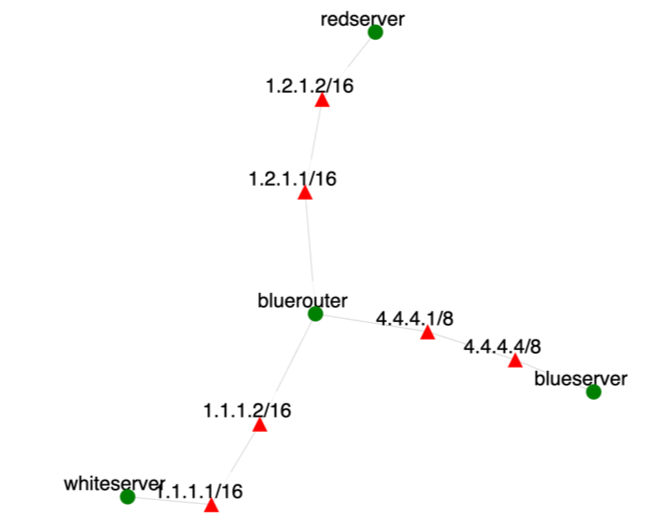

How to accessUse the XDC created for your team (e.g., teamX), named teamXred or teamXblue. They will be properly attached. Blue team can access blueserver and bluerouter in the experiment they are protecting, and red teams can access redserver in the experiment they are attacking. No teams have access to the whiteserver.OverviewThis exercise lets students practice monitoring and defending a Web server. Students will be divided into teams. Each team will play the defender role (Blue team) for their own system and the attacker role (Red team) for another team's system. This exercise uses the topology that looks like below (link between blueserver and bluerouter is only 10Mbps, while other links are 10 times larger):  Teams can share files by creating and sharing their own Google drive or Dropbox or similar. To access their nodes each team member should use the XDCs for their team. Members are forbidden from accessing XDCs of other teams. Blue Team TasksThis team will control the blueserver and bluerouter. The team's goal is to secure the server and the router against intrusions and DoS attacks. The team should leverage existing code for a banking application on the blueserver. If they want, they can improve this code. The team should also locate and close any unnecessary applications that may be used as a backdoor. I will open a few backdoors at the competition stage and you will need to find them and close them. Blueserver will receive legitimate user requests from the redserver node, but only from chosen IP addresses. They will also receive attack traffic from the redserver node. Redserver nodes will use IP aliasing to claim multiple IP addresses in 1.2.0.0/16 range. An IP can be legitimate, attack or both. A legitimate IP will always remain legitimate, while the attack IP can pretend to act legitimately at some times, and perform attacks at other times. Red team and my scoring program can create IP addresses on the fly. My scoring program will further create only legitimate IPs - red team will not be allowed to use these for attacks. The goal of the blue team is to serve all requests coming from legitimate IPs, to either serve or drop requests coming from the attack IPs and to maintain control and health of their app and the blueserver node. Make sure you understand how iptables command works before you use it as you may cut off your access to a given machine in SPHERE if you filter out some specific traffic to/from it, e.g., all outgoing traffic. The only way to recover from this is to reboot your machine. If you made the rules "sticky" I will have to recreate your experiment, which means you will have to reinstall everything.
Assumptions and RequirementsYou can borrow code from online sources but you need to understand what it does and how. Suggested division of workYour main task will be to automate monitoring of network traffic on bluerouter, and open ports and user requests on blueserver, and to build scripts that can block an IP automatically if it engages in malicious behavior. It may make sense to divide work so that 2-3 people work on bluerouter and 2-3 people work on blueserver. Once you close a backdoor, make sure that it is really closed. Also, make sure you don't close a service that a SPHERE node needs. If you do, you may cut yourself off the network. You will then need to recreate and reinstall the experiment. You can see what necessary services are at the start of your CCTF, before you install anything on the node.Suggested strategies
Red Team TasksThis team will control the redserver node. I will choose some IPs from the network's range (1.0.0.0/8) to host my legitimate clients and the rest can be used for attacks. The goal of the red team is to interfere with the legitimate user's access to blueserver. This can be done by: (1) launching a lot of traffic at the blueserver, (2) launching a lot of user requests at the blueserver, (3) making the banking application behave in a way that is not expected (e.g., being able to withdraw money from a legitimate user's account), (3) finding and exploiting a backdoor and deleting key files from the blueserver.You can set up a custom IP on redserver like this: sudo ifconfig ethX:Y 1.1.1.11 up replace X with the actual interface number for 1.1.1.6 address on redserver node. Replace Y with a number. Start with 2 and go up with each new address. You can use this new address in wget or curl by doing this: wget --bind-address=1.1.1.11 URL or curl --interface 1.1.1.11 URL You will need to use cookies to access the server. Please explore wget and curl to learn how to save and use cookies. Assumptions and RequirementsYou can borrow code from online sources but you need to understand what it does and how. Also, doing "sudo su username" on an experimental machine that you are not supposed to access is out of scope, regardless of whether you use your username or another student's username. Suggested division of workIt may make sense to divide work by attack technique so that 1-2 people work on different scanning approaches, 2-3 work on application DoSs, 1-2 work on network DoS, 1-2 work on sniffing and scanning for backdoors, etc.Suggested strategies
ScoringThe Blue Team receives a point for each legitimate client's request that the server processes and responds to correctly. Red Team gets the point otherwise.Exercise DynamicsTeams will need to simultaneously act as Blue Team and Red Team throughout the exercise. We will then have a post-mortem discussion and selection of a winning team.GradingEach team member will be graded based on their contribution to the team effort, not based on the team's performance. After the exercise each team member will submit a report containing the list of contributions they made to the team effort - e.g., modules that they coded, testing and setup they performed, etc. All team members must sign each report. Reports will be delivered to the instructor in class. The grades will be assigned based on the report.Useful LinksYou can use any programming language you like for any part of your assignment. Use Google to discover how to set up your networks and servers to be as secure as possible. |